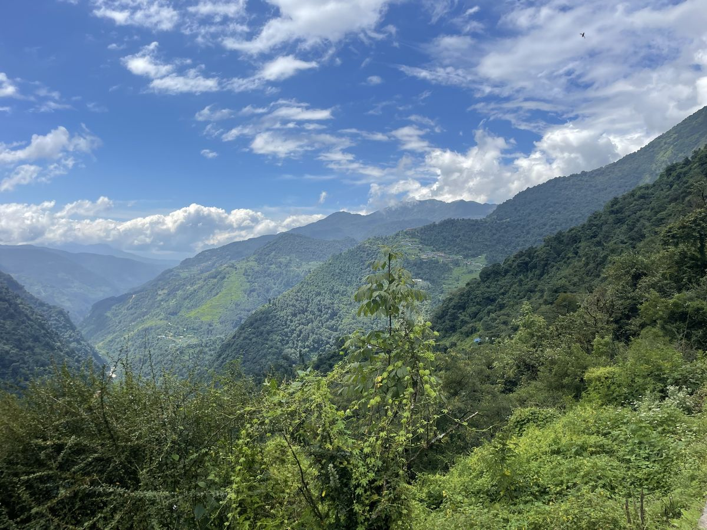
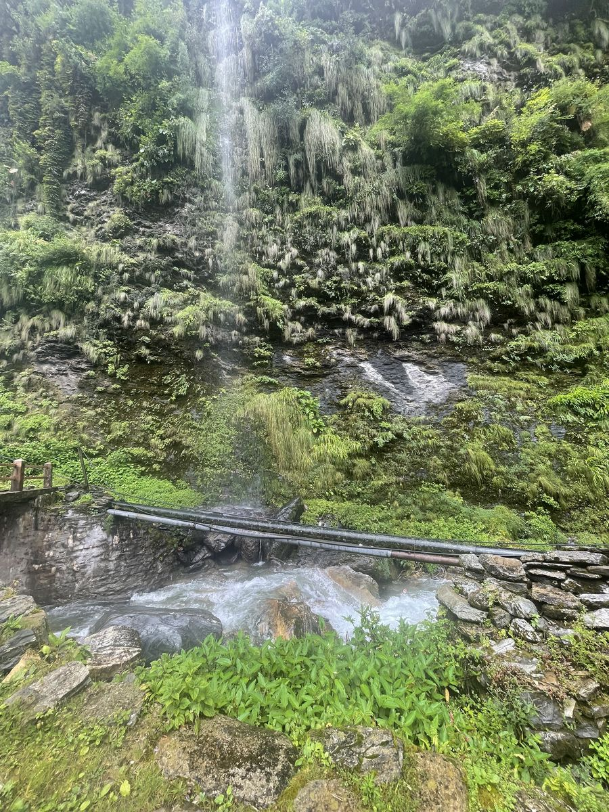
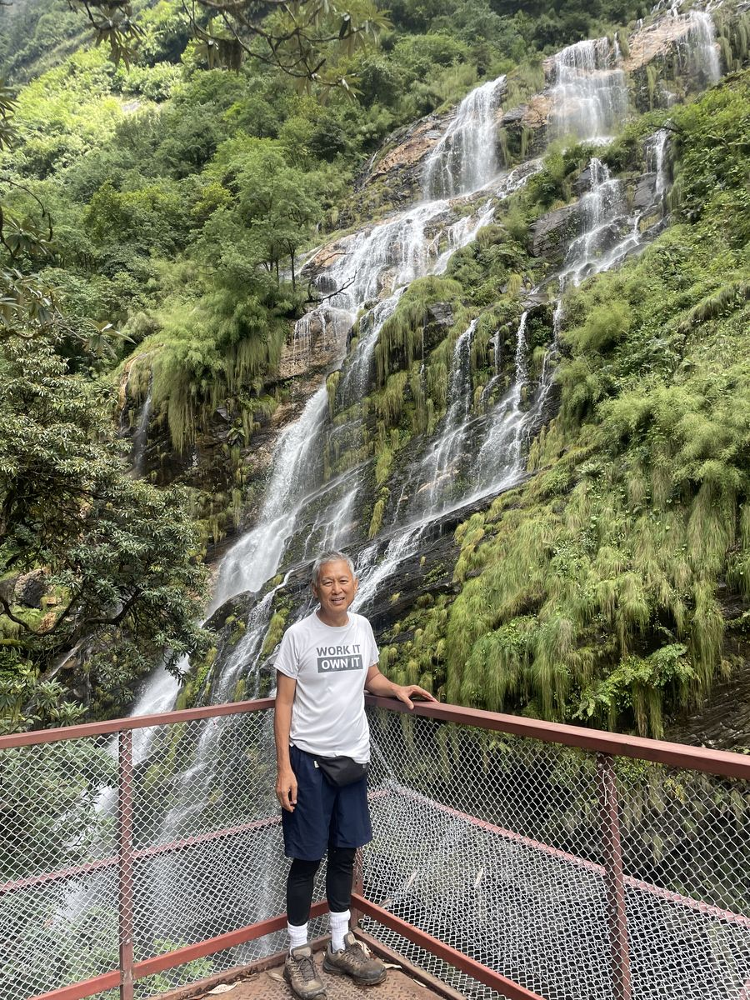
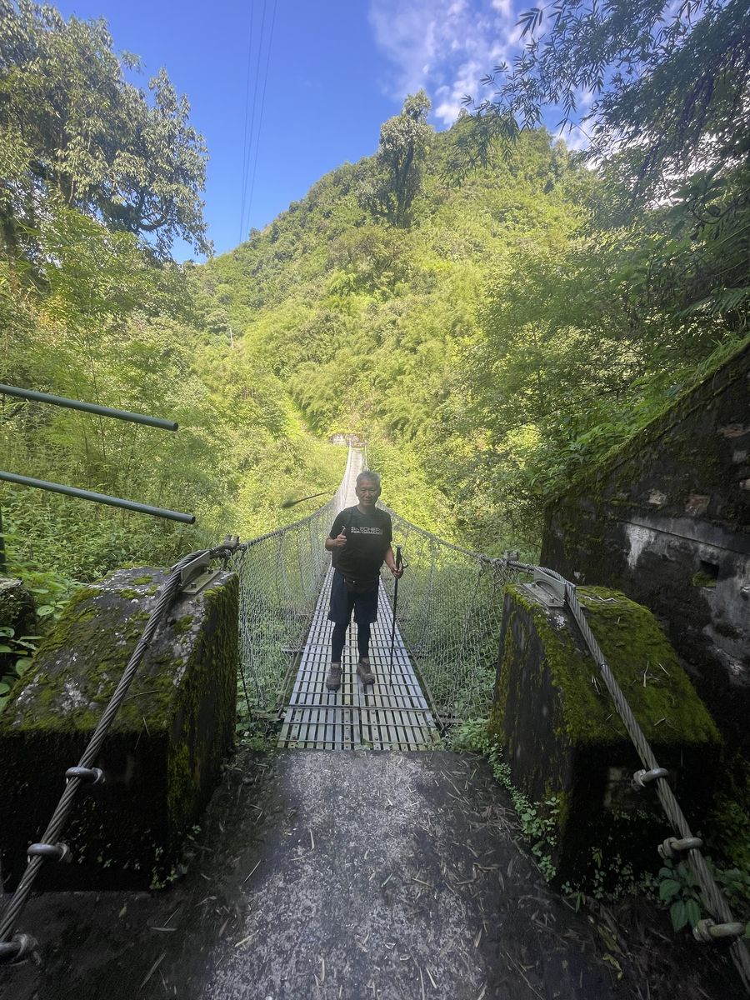
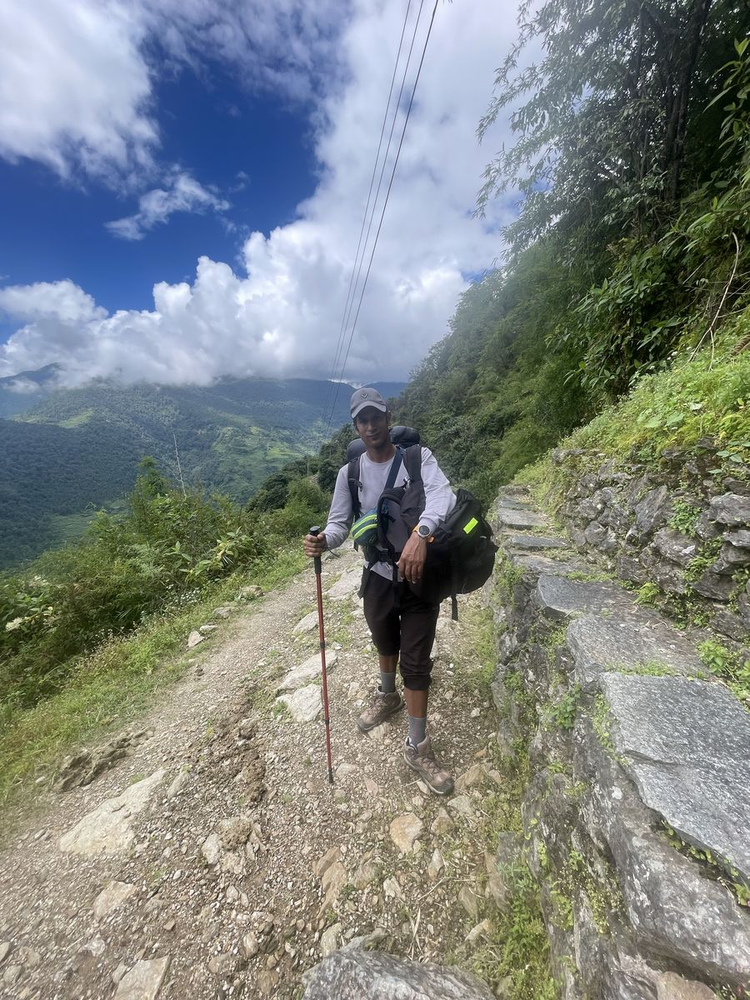
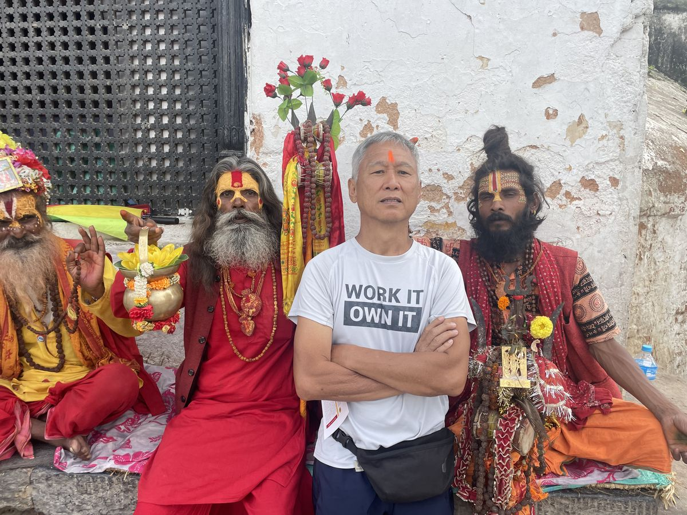
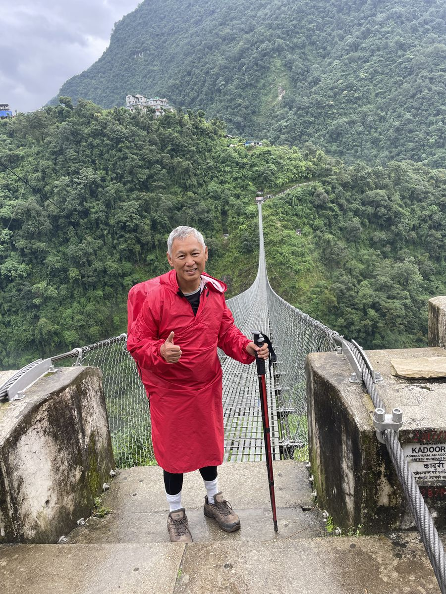

A Promise the Mountains Remembered山脉记住的承诺
Forty-six years ago, I went to Nepal for the first time.四十六年前，我第一次踏上了Nepal的土地。
I was a young man then. Joanne and I traveled with our dear friends See Tong and his wife — four young souls chasing adventure on the other side of the world. It was a different Nepal in those days, and we were different people. We didn't trek into the Himalayas back then. Instead, we boarded a tiny mountain plane to glimpse Mount Everest from the sky — that white, impossible giant rising above the clouds. We went on an open safari that thrilled us to our bones. We rafted wild rivers and laughed until our sides ached.那时我还是个年轻人。我和Joanne与挚友See Tong夫妇同行——四个年轻的灵魂，在世界的另一端追逐冒险。那时的Nepal与如今大不相同，我们也是不一样的人。那次我们并没有深入喜马拉雅山脉徒步，而是登上一架小小的山区飞机，从天上俯瞰珠穆朗玛峰——那抹白色的、不可思议的巨峰耸立于云端之上。我们乘坐吉普车进行野生动物探险，心跳激动，血脉偾张。我们漂流在湍急的河流上，笑到肚子痛。
I remember thinking, as that little plane banked toward the Himalayas all those years ago: one day, I will stand among them, not just look down from above.我记得，当那架小飞机转向喜马拉雅山脉的那一刻，我心里暗暗想道：总有一天，我要站在那些山峰之间，而不仅仅是从高空俯瞰。
Then life happened. The way it does to all of us.然后，生活来了。就像对我们每个人一样。
I came home. I worked. The years rolled by like prayer wheels — children, career, mortgages, responsibilities. Decades passed. The memory of Nepal stayed tucked away in a quiet corner of my heart, but I was too busy to take it out and look at it.我回到家，开始工作。岁月像转动的转经筒一般流逝——孩子、事业、房贷、责任。几十年就这样过去了。Nepal的记忆悄悄藏在我心底的一个角落，但我太忙了，忙到没有时间把它取出来细细回味。
I retired three years ago, at sixty-seven.三年前，我在六十七岁时退休了。
And the mountains were still waiting.而那些山，还在等待着我。
Why I Went Back — and Why Alone为什么回去——为什么独自一人
When I told friends I was returning to Nepal by myself this time, to trek all the way to Annapurna Base Camp at the age of seventy, the reactions ranged from polite concern to outright disbelief. Joanne, bless her heart, simply asked, "Are your boots broken in?" That's the kind of partner who believes in you after a lifetime together.当我告诉朋友，这次我要独自回到Nepal，在七十岁的年纪徒步到Annapurna大本营时，他们的反应从客气的担忧到彻底的难以置信，不一而足。Joanne，我那善良的妻子，只是问了一句："你的靴子磨合好了吗？"这就是在相伴一生之后，还愿意相信你的伴侣。
Retirement, I've come to learn, is not an ending. It's permission. Permission to keep the promises you made to your younger self.我渐渐明白，退休不是终点，而是一种许可。一种让你去兑现年轻时对自己所许下承诺的许可。
Into the Green Heart of the Annapurnas走进Annapurna的绿色腹地
The Annapurna Base Camp trek begins not with snow, but with jungle. Deep, lush, breathing jungle.Annapurna大本营的徒步之旅，起点不是白雪，而是丛林。深邃、葱郁、生机勃勃的丛林。

From Pokhara, I made my way to the trailhead and began walking into a landscape unlike anything I had imagined. Rice terraces stepped down the hillsides like staircases for giants. Bamboo groves whispered in the wind. Waterfalls — not one or two, but dozens — tumbled down moss-covered cliffs along the trail.从Pokhara出发，我来到登山口，开始走进一片超乎我想象的风景。梯田如同巨人的阶梯，沿着山坡层层而下。竹林在风中轻轻低语。沿途的悬崖上，一条条瀑布从苔藓覆盖的岩壁上倾泻而下——不是一两条，而是数十条。

I would round a corner, and there would be another curtain of water cascading down a green wall, the spray cool on my face after hours of climbing in the heat. Forty-six years ago I had only seen the Himalayas as a distant white line from a plane window. Now I was walking through their living, breathing foothills, one step at a time.每拐过一个弯，又是一帘瀑布从绿色的崖壁上飞泻而下，细细的水雾扑在脸上，在炎热的攀爬数小时之后，格外清凉。四十六年前，我只能从飞机窗口遥望喜马拉雅山脉那一抹遥远的白线。如今，我正一步一步，走过它生机勃发的山麓丘陵。

The Bridges That Tested My Nerve考验我胆量的吊桥
The Annapurna trail crosses river after river, gorge after gorge, on long suspension bridges that sway beneath your feet. Some are short and gentle. Others stretch hundreds of meters across deep ravines, with nothing but cable, mesh, and faith holding you up.Annapurna山道一路穿越河流、峡谷，靠一座座长长的吊桥相连，脚下桥身随步伐摇晃。有些桥短而平稳，有些则横跨数百米深的峡谷，支撑你的，只有钢缆、铁网，以及一份信念。
I will admit it — the first time I stepped onto one, my hand gripped the cable so tightly my knuckles turned white. By the tenth crossing, I was walking across with a smile, looking at the green canyon below, thinking: the man who flew over these mountains forty-six years ago could never have imagined this.我坦白——第一次踏上吊桥时，我紧紧抓住钢缆，指节都白了。到了第十次过桥，我已经可以带着微笑走过，俯视着脚下碧绿的峡谷，心想：四十六年前那个从飞机上俯瞰这些山峰的人，无论如何都想象不到这一幕。

The People Who Carry the Mountains in Their Hearts心中装着山的人
I did not walk alone for long. My guide, Dhruba, met me in the foothills — a young, strong Nepali man who knew every stone, every teahouse, every story of the trail.我独行的时间并不长。我的向导 Dhruba 在山麓与我汇合——一位年轻强健的尼泊尔人，对山道上的每一块石头、每一间茶馆、每一个故事都了如指掌。

Dhruba called me "dai" — older brother — and he meant it. When the path grew steep, he would say only, "Bistari, bistari, dai. Slowly, slowly." That phrase became my mantra. I have brought it home with me, and I use it now whenever life feels too fast.Dhruba叫我 "dai"——哥哥——他是真心的。当山路变得陡峭，他只会说一句："Bistari, bistari, dai。慢慢来，慢慢来。" 这句话成了我的心咒。我把它带回了家，每当生活节奏太快，我就默念这句话。
Over our nine days together, Dhruba became more than a guide. He was my translator with the teahouse owners, my morning alarm clock, my companion at dinner, and on the hardest climbs, my quiet reminder that I could keep going. If you ever go to Nepal, find a Dhruba. He will change the whole trip.在共同走过的九天里，Dhruba早已不只是向导。他是我与茶馆老板沟通的翻译，是每天早晨叫醒我的闹钟，是晚餐时的饭伴，是最艰难的攀登时，悄悄提醒我还能继续前行的那个人。如果你有机会去Nepal，找一个像Dhruba这样的向导吧。他会让整段旅程焕然一新。
In the teahouses each evening, I shared dal bhat and stories with trekkers from Germany, Japan, France, Australia. We were strangers in the morning and family by the time the wood stove burned low. The mountains have a way of stripping away pretense. Up there, no one cares what you did for a living. They only care that you keep walking.每天傍晚在茶馆里，我与来自德国、日本、法国、澳大利亚的徒步者一起分享豆汤饭和故事。早上还是陌生人，等柴火灶快要燃尽时，我们已经像一家人。山有一种力量，能剥去所有的伪装。在那里，没有人在乎你过去从事什么职业，他们只在乎你是否还在继续前行。
I stopped at the small monastery shrines and stupas along the way, spinning prayer wheels and listening to the wind in the prayer flags. I am not a religious man, but I felt something at those quiet places that I have no other word for than peace.我在沿途的小寺庙神龛和佛塔前驻足，转动经轮，聆听经幡在风中的低吟。我并不是一个宗教信徒，但在那些静谧的地方，我感受到了某种东西，唯一能形容的字眼，就是宁静。

The Physical Challenge — and What It Taught Me体力的挑战——以及它教会我的事
I won't pretend it was easy. Days of climbing stone staircases that seemed never to end. Knees that protested. Lungs that burned in the thinner air as I climbed higher. Rain that turned the trail into a stream more than once.我不会假装这是一件轻松的事。一天又一天地攀爬那些似乎永无尽头的石阶。膝盖开始抗议，随着海拔升高，稀薄的空气让肺部隐隐发烫。雨水不止一次将山道变成了小溪。

There were moments I asked myself what a seventy-year-old man was doing up here alone.有好几个时刻，我问自己：一个七十岁的老人，一个人跑到这里来，究竟是在做什么。
But here's what trekking in the Himalayas teaches you, and what I wish I could shout from every rooftop to every person my age:但这正是在喜马拉雅山脉徒步所教给你的，也是我多么希望能对每一个与我同龄的人大声喊出来的话：
I walked six to eight hours a day for nine days. I climbed thousands of stone steps. I did this not because I was extraordinary, but because I refused to let the calendar decide what I could do.我连续九天，每天步行六到八小时。我攀爬了数以千计的石阶。我做到这些，并不是因为我有什么过人之处，而是因为我拒绝让日历来决定我能做什么。
The trick is not strength. The trick is patience. Bistari, bistari. One step, one breath, one stone at a time.诀窍不在于力量，而在于耐心。Bistari, bistari。 一步一步，一呼一吸，一块石头一块石头地向前。
Sunrise at Annapurna Base CampAnnapurna大本营的日出
And then came the morning I will remember until my last day.然后，那个清晨到来了——那个我将铭记一生的清晨。
I rose before dawn at Annapurna Base Camp, 4,130 meters above sea level. I put on every layer I owned. I stepped outside into a cold so sharp it took my breath. And I waited.我在Annapurna大本营黎明前起身，海拔4,130米。我穿上了所有能穿的衣物，走出门外，迎面而来的寒气锋利如刀，几乎让我窒息。然后，我等待着。
Slowly, the first light touched the summit of Annapurna I. Pink, then gold, then a white so bright it hurt to look at. The whole amphitheater of peaks — Annapurna South, Hiunchuli, Machhapuchhre at my back — caught fire one by one.渐渐地，第一缕晨光触碰到了Annapurna I的峰顶。先是粉红，再是金黄，最后化为一片耀眼的白，白到让人不敢直视。整座由山峰环抱的圆形剧场——Annapurna South、Hiunchuli，还有身后的Machhapuchhre——一座接一座地燃烧起来。
I did not cheer. I did not raise my arms. Well — perhaps I gave the mountains two thumbs up, because how else does a man tell the Himalayas thank you?我没有欢呼，也没有举起双臂。好吧——也许我朝着群山竖起了两个大拇指，因为一个人还能用什么方式来向喜马拉雅山道谢？
I thought of that young man in the small plane, forty-six years ago, with his whole life ahead of him.我想起了四十六年前那个坐在小飞机里的年轻人，他的整个人生还在前方等待着他。
I thought of See Tong and the laughter we shared on those wild rivers.我想起了See Tong，以及我们在那些湍急河流上共同留下的欢笑。
I thought of Joanne, waiting at home, who had packed me an extra pair of wool socks "just in case."我想起了Joanne，她在家里等待着我，还特意多塞了一双羊毛袜，说是"以防万一"。
And I thought: I kept the promise. I am here. And I am only just beginning.然后我想：我兑现了承诺。我来了。而这，不过才是开始。
What I Want You to Hear我想对你说的话
If you are reading this and you are sixty, seventy, eighty — and you have a mountain in your heart, please listen:如果你正在读这篇文章，而你已经六十、七十、或者八十岁——如果你心中也有一座山，请听我说：
- The dreams you postponed are not lost.那些你一再推迟的梦想，并没有消失。They are waiting.它们还在等你。
- Train, but don't wait for perfection.好好准备，但不必等到完美。I walked the hills near my home for months. That was enough.我在家附近的山丘上走了好几个月，那就够了。
- Hire a good guide.找一个好向导。A guide like my Dhruba is worth every rupee. The Nepali people welcome trekkers of every age with open arms.像Dhruba这样的向导，每一卢比都物有所值。尼泊尔人以开放的心态欢迎每个年龄段的徒步者。
- Listen to your body.聆听你的身体。Hydrate. Acclimatize. Respect the mountain. But trust yourself.多补水，适应高度，尊重山的力量，但也要相信自己。
- Tell the people you love before you go.出发前，告诉你爱的人。Joanne knew every detail of my route. That is not weakness. That is wisdom.Joanne了解我行程的每一个细节。这不是软弱，这是智慧。
Forty-six years between two trips to Nepal. A young man's glimpse from the sky, and an old man's footsteps on the ground.两次Nepal之旅，相隔四十六年。一次是年轻人从天空的一瞥，一次是老人在大地上留下的脚印。
Retirement is not a closing door. It is a wide-open trail.退休不是一扇关闭的门，而是一条豁然开朗的山路。
I am seventy years old. I trekked solo to Annapurna Base Camp. And the next adventure is already calling.我七十岁了。我独自徒步到达了Annapurna大本营。而下一段冒险，已经在召唤我了。
What is yours?你的，又是什么？